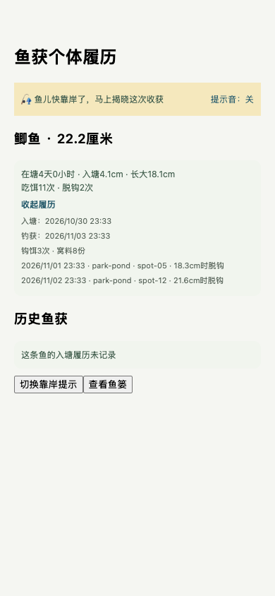
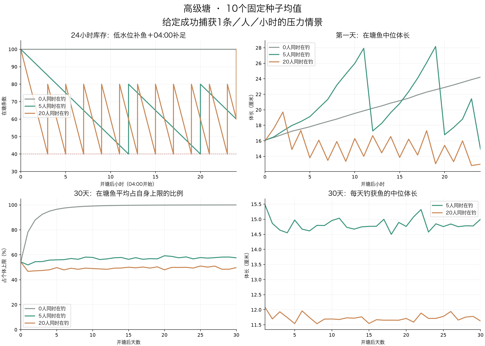
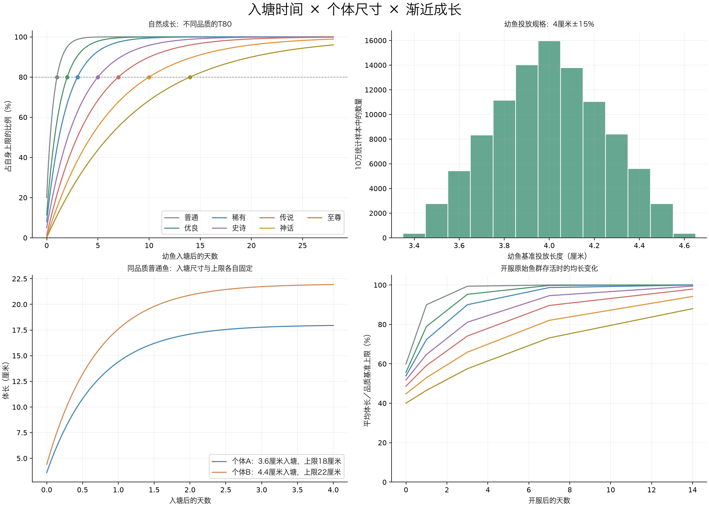

钓鱼系统现行规则
| 字段 |
当前口径 |
| 整理编号 |
FISH-RULES-01（文档与工具维护，不是新概率方案） |
| 状态 |
已实现；本地文档、脚本入口与回归核对 |
| 设计时间 |
2026-11-04 |
| 完成时间 |
2026-11-04 |
| 规则标识 |
FISH-CURRENT-2026-11-04 |
| 环境边界 |
本地源码与默认配置；实际测试库切换、部署和热更核对仍待执行 |
本页是钓鱼概率、成长和补鱼的现行查阅入口。用户已确认的成长需求以FISH-ECOLOGY-01为准；尚未重新定稿的概率，以当前代码审计描述现状，不能把已发现的问题当成新需求已经确认。
使用顺序
- 开发前先读本页，再读对应有效规格与开发交接。
- 旧页首标有“历史阶段记录”时，只继承其中明确保留的交互、配置或兼容范围；历史正文里的旧数字不作为新开发与验收要求。
- 用户新确认的需求必须先更新对应规格、交接、规则登记和验证，再更新本页；不能通过恢复旧脚本来补验收。
- “已实现”描述对应阶段曾交付的工作，不自动意味着其所有历史数值至今有效；“本地已实现”也不表示实际环境已部署。
现行有效资料
已确认的成长与生态需求
| 品质 |
上限基准 |
个体上限波动 |
自然达到自身上限80%的时间 |
| 普通 |
20厘米 |
±15% |
1天 |
| 优良 |
35厘米 |
±15% |
2天 |
| 稀有 |
50厘米 |
±15% |
3天 |
| 史诗 |
80厘米 |
±15% |
5天 |
| 传说 |
3米 |
±15% |
7天 |
| 神话 |
15米 |
±15% |
10天 |
| 至尊 |
40米 |
±15% |
14天 |
- 幼鱼基准投放规格4厘米±15%，与上限独立固定；品质决定上限和T80，本轮不叠加鱼种速度或鱼种上限倍率。
- 从入塘规格开始先快后慢地渐近成长，不设14天长满终点。初始鱼历史入塘分布为开服前14～0天；不推算生物学出生日期。
- 40个正式塘，每塘100条、20钓位；新手教学独立。日常补入50%幼鱼、40%成长鱼、10%较成熟鱼，实际投放时起算在塘时长。
- 每小时库存≤40补80；上海04:00补100，同刻以日结为先。高品质按原品质目标库存限补，不删除超额存鱼。
- 自然体长按时间推导，04:00可写快照；塘内钓位迁徙每小时判定，无真人活跃时依既有休眠与有界补算规则处理。
- 钩饵实际摄食加15成长分钟；每窝12份、每份10分钟，每鱼每窝最多2份，仅同位实际摄食者获得，余量过期作废；共同受滚动24小时360分钟上限约束。
- 脱钩额外成长为0（E0），履历照常记录。摄食成长不会改早入塘时间。
- 体长保存0.001米精度；不足1米显示厘米、精确到0.1厘米；1～不足10米保留两位米小数；10米起保留一位米小数。
正式钓鱼当前如何判定
默认每分钟只为在线、等待中的玩家判定一次。从当前钓位未锁定实体鱼中，按每条鱼品质权重38／28／18／9／4／2／1抽一条；再用它的品质、成长比例、个体偏置、钓位系数、自动匹配鱼饵、鱼竿、塘和窝料计算咬钩。不能把所有鱼的咬钩率直接求和。
满长、其他系数均为1、无付费饵的单鱼基础咬钩率为0.25%／0.16%／0.09%／0.04%／0.0175%／0.0075%／0.003%。匹配付费饵是先加0.06或0.07，鱼竿和窝料再按各自乘区修正。脱钩与收杆主要按实际体长，在咬钩时固定结果与时长；成功后自动入包续钓。完整适配、状态门禁和边界见概率审计。
**待重设计而非本次已改动：**默认30分钟无关注进入睡眠后命中必脱；35厘米处脱钩曲线不连续；大鱼收杆占用较长；免费和付费饵差距大；平均每小时一条不保证每小时至少一条。本次只统一记录，不自行选择新概率或关闭既有状态机制。
历史方案与兼容范围
| 历史口径 |
当前处理 |
| 指数咬钩、所有鱼概率求和、品质脱钩表、近满固定98.4%脱钩 |
不参与正式判定，旧正文仅供追溯 |
| 统一14天长满、七天截断、全部鱼45米、按鱼种乘体型／速度 |
新鱼不采用；旧鱼迁移和历史读取的兼容函数仍保留 |
| 脱钩×1.02、临时窝料尺寸加成、5厘米粗步进 |
已被E0、实际摄食、毫米精度替代 |
| 30秒／5分钟咬钩、15分钟迁徙／旧补鱼 |
不作为现行正式塘要求 |
qualityWeightSkew、sizeCapMul、窝料1.5倍封顶 |
不能仅凭有配置就认定正式链路已生效，见审计 |
| 新手5秒教学、演示随机鱼、旧饵／旧渔具、旧鱼成长回退 |
仍有明确用途，不在本次清理中删除 |
| 衰老、自然死亡、繁殖、自然迁出 |
暂缓，不是已确认实施或已否定的方案 |
历史正文保留原路径，防止旧链接失效；页首覆盖状态优先于正文中当年的“已实现”。旧模拟代码另存历史脚本目录，原命令入口明确退出，不再生成现行报告。
工具与验收
npm run verify:fishing-rules # 资料状态、历史入口、核心源码版本核对；不访问数据库
npm run verify:fishing-current # 上述核对 + shared构建 + 现有服务端回归（隔离库）
npm run report:fishing-current # 核对后刷新当前概率说明
npm run simulate:fish-entry # 当前成长／补鱼压力模型；不是全流程鱼获预测
规则登记在scripts/fishing-rules/current-rules.json。关键源码／生成配置变化后，版本检查会提示先重新核对规格与报告，不能静默把旧报告认作最新。登记中的摘要只有在审阅并更新受影响资料后才可更新。
模拟进入真实日报对比需要同时匹配规则标识与modelKind=full-flow-fishing。现阶段仅有静态概率审计、成长补鱼压力模型，尚无获准用作真实鱼获基准的完整会话模拟；日报应显示未建立基准，不套用旧结果。
验收：现行入口可追溯；旧正文带局部替代范围；旧模拟执行前拒绝写报告；真实日报不读取旧模拟基准；当前成长、补鱼、营养、履历与恢复回归通过。没有改动概率和经济规则，没有部署。
本次首次回归发现原Vitest入口未全局隔离数据库，部分旧测试打开并修改了本地默认库，出现锁冲突。已将测试配置和现行核对入口同时固定到内存库，重新完成回归；现场备份与影响边界见维护验证与本地库事件说明。不能把这次工作描述成“完全未访问本地默认库”。
FISH-ECOLOGY-01 实现与验证报告
2026-11-04。本地代码已实现，真实测试服务器及数据库尚未切换。所有数据库验证使用内存库或隔离临时库；没有操作项目中的实际数据文件。
玩家会看到什么
同品质鱼的成长上限不再完全相同。普通鱼上限在17～23厘米间固定抽取，幼鱼基准规格为3.4～4.6厘米；每条鱼的上限与幼鱼规格分别生成，重启和迁徙不会重抽。普通鱼自然成长1天达到自身上限80%，优良2天，其余依次3／5／7／10／14天，之后继续放缓。
钓获后可以展开履历，查看入塘日期、入塘体长、在塘时间、长大量、吃饵次数和脱钩位置。背包与相册保存捕获当时的快照；缺乏记录的旧鱼显示未知。自然成长和吃饵加速不会冒充更早的入塘日期。

上岸前5秒出现提示，保持原有自动流程。Unity提示音遵循静音、勿扰和后台设置；移动Web可开启提示音，原生移动端目前采用可关闭的震动和视觉提示。没有新增需要玩家手动完成的钓鱼动作。
本次落地的规则
| 项目 |
实现行为 |
| 鱼塘容量 |
40个正式塘，每塘100条、20钓位；另保留新手塘独立引导配置 |
| 初始鱼 |
按原品质权重和鱼种池铺鱼，从开服前14～0天倒推出历史入塘时间；不编造摄食或脱钩 |
| 日常补鱼 |
每小时剩余≤40补80；上海时间04:00补100，同刻优先日结 |
| 新鱼规格 |
50%幼鱼、40%成长鱼、10%较成熟鱼；实际投放时间起算在塘时长 |
| 高品质 |
史诗及以上达到原权重对应库存阈值后停止自动补入；每条新增后重新检查 |
| 钩饵／窝料 |
钩饵摄食15分钟；窝料12份×10分钟，每鱼每窝最多2份，共用滚动24小时360分钟额度 |
| 局部摄食 |
每30秒每窝最多1份，实际同钓位未锁定的鱼获得；无人不补发，过期剩余份数作废 |
| 脱钩 |
E0，仅记录经历，额外成长为0；已摄食奖励不重复发放 |
| 回鱼 |
返回同一fishId；同塘扣除背包期间离塘时间，跨塘从实际回鱼时刻开始新塘经历；原经济收益保留 |
| 写库 |
自然长度按查询时间计算，04:00落快照；摄食、脱钩、捕获、回鱼即时持久化 |
| 异常恢复 |
上钩身份和结果可从数据库恢复；扣饵、奖励与鱼锁事务一致，失败回滚 |
新手引导按玩家单独发放首次鱼获，不参与正式塘小时／日结补鱼。新增20塘沿用对应类别的解锁、收费和品质表；巨物塘仍保持锁闭。原部分鱼种池的至尊品质没有合法候选，本次仅将其已有青鱼的品质范围上限扩到至尊，以保留原鱼种池和品质权重。
验证结果
- 最终配置联动回归：服务端全量23个测试文件、151项全部通过（含新手塘兼容用例）。
- 覆盖成长T80、毫米精度、单位边界、40塘初始铺设、低水位与日结、高品质限补、离线唤醒、营养额度、局部份数、重复事件、重启恢复、捕获事务失败回滚、履历冻结、原鱼回塘。
- L1临时库7项验证包含全量备份恢复、资产历史保留、失败回滚、批次幂等及在线进程／未结算状态拦截。实际配置在临时库铺设4000条正式塘鱼＋1条新手塘鱼。
- Unity履历、音效、尺寸与地图相关58项通过；移动Web真实组件在390×844屏幕验证履历展开、提示开关与鱼篓滚动，无页面异常。
- shared构建通过；配置、鱼种池、打窝、回鱼与相册smoke通过。服务器全项目类型检查尚有31项既有错误，修改前HEAD为32项，本次无新增错误；移动端另有6项既有RN Web类型错误，未宣称全项目编译通过。
旧状态编码测试漏计原有打窝阶段，已补正为10阶段；相册smoke同步现行个人主页仅返回钉选照片的契约。权威表旧窝料临时尺寸加成已归零，避免与持久营养叠加。没有增加或更改埋点事件。
30天模拟说明
六类塘×0／5／20人在钓×10个种子，共180次模拟、5400塘日；库存守恒、尺寸上限和高品质补入阈值校验均通过。详见压力模拟完整报告。

在给定每人每小时成功1条的压力下，高级塘20人情景最后7天钓获中位体长约11.8厘米，5人约14.8厘米。无人塘30天后全部鱼达到自身上限80%以上；没有死亡或自然迁出机制，仍会逐渐接近各自上限。
这些是固定成功捕获量的压力输入，不代表现有概率已能提供这种产量。当前免费饵＋竹竿的简化概率快照明显低于人均每小时1条，需要后续结合实际在线过程单独调参。模拟未覆盖营养、回鱼和钓位局部迁徙，不将结果当作严格稳态证明。
未完成工作已集中记录在未完成事项与后续交接，包含执行顺序、遗留问题和真实环境验收清单。
实际环境还未执行的步骤
本地可以修改服务端源码，不等于已连接运行中的服务器。实际测试库切换需要先核对目标主机、数据库路径和备份位置，再停服处理未结算状态。工具会先全量备份并验证可恢复，再归档旧在塘鱼和重建新鱼群；账号、资产、背包、相册和历史继续保留。
重建操作说明提供dry-run与显式apply命令；未指定目标测试库不会使用默认数据库清塘，管理后台原在线重置入口也已阻断。实际部署、真实库备份及重建均尚未执行。
FISH-ECOLOGY-01 未完成事项与后续交接
记录日期：2026-11-04（北京时间）。
当前状态：本地实现与隔离测试完成，实际环境部署、真实测试库重建和上线验收尚未完成。 计划表中的“已实现”仅表示代码已完成，不表示服务已更新或用户已验收。
本说明用于记录后续工作，本次不执行部署、数据库切换或新的数值调整。
1. 已完成的基础
成长公式、个体上限波动、入塘时间与尺寸、40个正式塘、补鱼调度、B营养、E0脱钩、原鱼回塘、捕获履历以及双端提示均已有实现；L1备份、恢复校验和重建工具也已编写。
本轮服务端151项、Unity相关58项测试通过；备份恢复仅在隔离临时库演练。30天模拟使用给定成功捕获量进行压力测试，不代表当前咬钩概率已经达到目标。详细证据见实现与验证报告。
2. 实际环境切换前必须完成
下表各项目前均未完成；建议按顺序处理。
| 待办 |
当前缺口 |
后续操作与完成条件 |
建议负责方 |
| 确认目标环境 |
尚未确认运行中的服务器及实际测试库 |
记录主机、服务启动方式、数据库绝对路径、备份目录、环境用途和当前版本；本地发现的数据库文件不能直接当作目标库 |
后端／运维 |
| 固定发布版本 |
本次改动仍在本地工作区，尚未形成已发布版本 |
审查差异、记录提交或发布包版本；确认服务端、shared配置与客户端使用同一版规则，并保留旧版本 |
后端／客户端 |
| 完整构建检查 |
相关测试通过，但全项目类型检查仍有既有错误 |
处理第3节的问题，运行目标平台构建；记录实际构建结果，不能以单元测试通过替代可发布构建 |
后端／客户端 |
| 停服前处理未结算状态 |
未检查实际环境的会话、鱼锁和窝料 |
处理上钩、待领取与钓鱼会话，等待有效窝料结束，再停止持库进程；L1 dry-run通过 |
后端／运维 |
| 真实库备份及恢复验证 |
尚未备份或恢复真实测试库 |
用显式目标路径运行工具；保留全量备份、独立恢复校验副本、manifest和原表内容摘要，验证可恢复 |
后端／运维 |
| 执行L1活跃鱼群重建 |
真实鱼群仍未切换 |
归档旧活跃鱼和运行状态，保留原账号、资产、背包、相册、帖子与历史；重建4000条正式塘鱼＋1条新手塘鱼，记录批次及规则版本 |
后端／运维 |
| 部署并联合验收 |
未连接真实服务进行完整联调，也未发布本轮客户端包 |
按第4节验收；确认真实客户端能看到新塘、新履历和新规则，再标记环境切换完成 |
后端／客户端／验收人 |
L1工具和具体命令见测试鱼群重建说明。工具需要明确的测试库、备份路径和执行模式，不会自动采用默认库；当前检查依赖macOS／Linux的lsof，若目标运行环境不同，需要先验证工具可用性。
不得手工删除未结算锁来绕过检查。恢复演练使用独立副本；如上线后需要回退，应先停止服务、保存故障现场，并核对回退期间新增的数据，避免直接覆盖导致历史丢失。
3. 已知遗留问题
3.1 全项目类型检查未通过
| 范围 |
已记录数量 |
问题类型与位置 |
后续完成条件 |
| 服务端 |
31项；修改前基线32项 |
auth.ts、createApp.ts、socialRoutes.ts的路由参数及空值类型；logger.ts选项类型；旧迁移中Database类型写法；shop.ts缺少getTackle／TackleId引用 |
逐项修复，服务端完整类型检查通过，并回归认证、路由、商店和迁移 |
| 移动端 |
6项 |
BackpackButton、ChatPanel、CodexButton、ShopButton的hovered参数；TileLayer的delayPressIn；UserProfileModal的85vh样式类型 |
统一RN／Web的类型适配，移动端完整类型检查通过并验证页面交互 |
这些问题在本轮实现前已存在，本轮没有新增类型错误，但仍需处理；“既有问题”不等于可以忽略运行影响。服务端证据：修改前、修改后。数量反映本轮检查时的代码与依赖环境，后续修复时需重新核对。
3.2 原生移动端提示音尚未接入
Unity已接入提示音，移动Web可开启提示音；原生移动端目前只有可关闭的震动和视觉提示，尚无本轮原生音频实现。
如需要原生移动端同样播放声音，后续应接入音频能力，并在目标设备验证音量、静音、前后台切换与重复提示。当前视觉与震动仍能工作，不增加手动钓鱼步骤。
4. 真实环境验收清单
以下是部署后的待验收项，不能用当前临时库测试直接勾选。
5. 后续调参与明确暂缓的事项
| 项目 |
当前情况 |
后续处理 |
| 人均每小时至少1条的体验目标 |
未完成概率校准。30天报告中的1条／人／小时是输入压力，不能证明实际产量；免费饵＋竹竿简化快照明显低于目标 |
单独校准咬钩、脱钩、装备与饵料；用真实在线过程统计成功数、首条等待和长时间空手比例，并明确目标是平均产量还是需要保底机制 |
| 更完整的长期生态模拟 |
已验证成长与补鱼的条件压力场景，未联合模拟营养、回鱼、局部钓位迁徙及完整收杆过程 |
后续扩展模拟并结合实际运营数据验证，不能宣称已有严格稳定态 |
| 衰老、死亡、自然迁出及繁殖 |
用户明确暂缓；无人塘仍会逐渐接近个体上限 |
保留为后续玩法，不作为本次实现遗漏，也不在本轮自动补做 |
| 多线路／物理服务器扩容 |
本次实现单条逻辑线路40塘；没有完成多机部署或换线系统 |
用户规模增长后另行设计与实施 |
| 事件数据长期维护 |
已有即时持久化及查询索引，但没有本轮真实运营增长数据或自动归档演练 |
后续按真实事件量制定备份、保留和归档策略；履历与资产历史不能直接作为可删日志处理 |
6. 后续接手时填写
- 目标主机、服务与测试库路径：待核对。
- 发布版本及客户端版本：待记录。
- 备份路径、恢复校验结果与L1批次：待执行后记录。
- 真实环境验收人、日期及结果：待验收。
- 类型检查问题处理结果：待补充。
- 捕获频率调参结果：后续专项记录。
交接顺序：确认环境与版本 → 解决构建问题 → 未结算状态处理和停服 → dry-run → 全量备份与恢复验证 → L1重建与部署 → 真实环境验收。实际执行仍以重建说明和目标环境核查结果为准。
FISH-ECOLOGY-01：实现后的24小时与30天生态压力模拟
2026-11-04。复用当前共享业务函数，六类正式塘×0／5／20人在钓×10个固定种子，共180次独立模拟、5400塘日。结果用于验证成长与补鱼的变化，未连接数据库。
在给定每人每小时成功捕获1条的压力下，≤40补80和每日04:00补100能形成可重复的库存波动；混合规格补鱼能持续提供不同长度。长期无人捕捞时，鱼仍会接近各自上限。当前自然成长方案不等于已经实现人均每小时成功1条。
怎样模拟
- 初始100条；原品质权重和合法鱼种池；幼鱼基准3.4～4.6厘米、独立上限±15%、T80=1／2／3／5／7／10／14天。初始体长先抽取，再倒推前14～0天入塘。
- 使用实际共享函数生成50%幼鱼／40%成长鱼／10%较成熟鱼；每小时检查≤40补80，每日上海时间04:00补100，重合仅日结；史诗及以上达到原表库存目标即停止补入。
- 0／5／20是同时在钓人数，全天持续。后两者每天120／480条成功捕获是输入负载；需15／60名用户按8小时轮班。一条100人线路每日最多800条的目标预算下，这些是单塘独立压力情景，不能把40塘都按满员相加。
- 在已发生成功捕获的条件下，按当前品质候选权重、咬钩与脱钩公式分配被捕获个体。采用全塘充分混合近似，位置系数1、竹竿、基础免费饵、个体咬脱偏置均为1。
- 未模拟实际咬钩时间、收杆占用、钓位局部密度与迁徙、摄食营养、打窝、回鱼、断竿、禁止塘驱离、死亡或迁出。巨物塘作为其配置的压力测试，不改变正式锁闭状态。
- 表内统计是10个种子的均值；“钓获中位体长”是各次模拟中位数的均值，并非混合全部样本后的中位数。小数条数是跨模拟均值。
第一天：高级塘
从04:00开塘开始计时，表内“日末”在次日04:00补足100之后。
| 同时在钓 |
成功捕获 |
补入 |
最低库存 |
小时补鱼次数 |
日结补鱼次数 |
钓获中位体长 |
日末在塘中位 |
日末≥80%上限 |
| 0 |
0 |
0 |
100 |
0 |
0 |
— |
24.2cm |
60.1% |
| 5 |
120 |
120 |
40 |
2 |
1 |
15.5cm |
14.9cm |
10.3% |
| 20 |
480 |
480 |
40 |
11 |
1 |
12.1cm |
13.0cm |
6.9% |
20人满负载时，库存从100降到80、60、40，首次在第3小时补至80；随后通常每2小时触发一次低水位补鱼，日结恢复100。5人情景第12、20小时触发低水位补鱼。因为捕获量固定、始终有鱼可捕，这些数量轨迹不受随机品质和尺寸影响；真实随机捕获会让触发时间前后移动。
不同品质被钓走与补入后的分布
高级塘单格为“当天捕获数 / 次日04:00补足后的在塘数”。高品质自动补入受库存上限限制；开塘随机超额个体允许继续存在，不能为了凑配额删除。
| 情景 |
普通 |
优良 |
稀有 |
史诗 |
传说 |
神话 |
至尊 |
| 5人·第1天 |
73.0 / 40.0 |
35.9 / 30.7 |
9.8 / 11.3 |
1.1 / 9.8 |
0.2 / 4.5 |
0.0 / 2.4 |
0.0 / 1.3 |
| 5人·第30天 |
73.5 / 40.4 |
37.9 / 31.3 |
7.1 / 11.8 |
1.5 / 9.0 |
0.0 / 4.0 |
0.0 / 2.2 |
0.0 / 1.3 |
| 20人·第1天 |
290.1 / 39.7 |
155.3 / 31.3 |
29.2 / 11.6 |
5.0 / 9.3 |
0.4 / 4.4 |
0.0 / 2.4 |
0.0 / 1.3 |
| 20人·第30天 |
294.8 / 40.8 |
151.7 / 31.1 |
27.5 / 11.8 |
5.3 / 8.9 |
0.6 / 4.0 |
0.1 / 2.1 |
0.0 / 1.3 |
30天后：六类塘对照
所有情景30天末均补足100条；捕获与补入严格守恒。钓获中位体长取最后7天的日统计均值。
| 鱼塘类别 |
在钓人数 |
30天捕获 |
30天补入 |
末7天钓获中位 |
第30天在塘中位 |
≥80%上限 |
初始鱼仍在塘 |
| 高级塘 |
0 |
0 |
0 |
— |
32.5cm |
100.0% |
100.0 |
| 高级塘 |
5 |
3600 |
3600 |
14.8cm |
14.9cm |
20.8% |
4.6 |
| 高级塘 |
20 |
14400 |
14400 |
11.8cm |
13.1cm |
11.7% |
2.8 |
| 老手塘 |
0 |
0 |
0 |
— |
41.3cm |
100.0% |
100.0 |
| 老手塘 |
5 |
3600 |
3600 |
14.4cm |
17.3cm |
25.5% |
7.8 |
| 老手塘 |
20 |
14400 |
14400 |
11.8cm |
15.3cm |
15.9% |
4.2 |
| 野外塘 |
0 |
0 |
0 |
— |
34.1cm |
100.0% |
100.0 |
| 野外塘 |
5 |
3600 |
3600 |
13.1cm |
15.7cm |
32.0% |
13.2 |
| 野外塘 |
20 |
14400 |
14400 |
10.5cm |
14.6cm |
22.6% |
7.5 |
| 水库塘 |
0 |
0 |
0 |
— |
33.6cm |
100.0% |
100.0 |
| 水库塘 |
5 |
3600 |
3600 |
13.0cm |
15.7cm |
32.0% |
12.8 |
| 水库塘 |
20 |
14400 |
14400 |
10.5cm |
14.5cm |
21.7% |
7.0 |
| 禁止塘 |
0 |
0 |
0 |
— |
62.0cm |
100.0% |
100.0 |
| 禁止塘 |
5 |
3600 |
3600 |
16.7cm |
25.6cm |
22.4% |
6.9 |
| 禁止塘 |
20 |
14400 |
14400 |
14.0cm |
22.1cm |
14.0% |
3.0 |
| 巨物塘 |
0 |
0 |
0 |
— |
34.1cm |
100.0% |
100.0 |
| 巨物塘 |
5 |
3600 |
3600 |
14.6cm |
15.4cm |
22.8% |
4.6 |
| 巨物塘 |
20 |
14400 |
14400 |
11.7cm |
13.6cm |
13.6% |
2.8 |
稳定态与周期性
数量上存在由固定捕获负载、低水位补鱼和04:00日结共同产生的周期；它不是鱼自然繁殖形成的生态平衡。以下高级塘每周“每日04:00补鱼后平均体长”的均值，可以观察尺寸是否仍在缓慢漂移。
| 在钓人数 |
第1周均长 |
第2周均长 |
第3周均长 |
第4周均长 |
第4周相对第3周 |
| 0 |
82.7cm |
1.02m |
1.08m |
1.11m |
持续趋近上限 |
| 5 |
80.3cm |
1.02m |
1.10m |
1.11m |
1.4% |
| 20 |
78.4cm |
94.6cm |
1.03m |
1.07m |
3.2% |
繁忙塘的大多数低品质鱼在捕获和补入间更替，尺寸分布可进入有波动的重复区间；较少被捕获的高品质鱼会继续长大，因此总平均体长可能在低品质已稳定后仍上升。30天和10个种子只能支持这一条件下的趋势，不能证明严格平稳分布或全部玩家行为下都稳定。无人塘没有捕获与自然更替，会逐渐堆积接近个体上限的鱼；±15%仅保留个体尺寸差异，不会自动更新鱼群。
与当前捕获概率的边界
下表仅把当前共享概率在全塘充分混合、位置系数1、竹竿＋免费饵、每小时60次独立判定的条件下，折算为“单人每小时理论成功机会”。尚未扣除收杆占用、空钓位、断竿等实际损失，也未加入收费饵与打窝帮助；不是实际用户产量模拟。
| 库存来自的压力情景 |
开塘时 |
第1天补鱼后 |
第30天补鱼后 |
| 0 |
0.058 |
0.075 |
0.084 |
| 5 |
0.058 |
0.055 |
0.055 |
| 20 |
0.058 |
0.052 |
0.052 |
这说明“补鱼能够承受1条／人／小时”与“当前咬钩算法能产出1条／人／小时”需要分别验收。后者仍需结合真实装备、饵料、局部钓位和在线过程校准。
校验与复现
- 1,098,000条生成记录：初始历史入塘范围、实际补入时刻和上限合法。
- 80,136,000次尺寸检查：从实际入塘长度连续增长、不超过个体上限；本次营养与离塘时间均为0。
- 2,289,600次库存守恒检查：当前库存＝100＋累计补入−累计捕获＋回鱼（本次0）。
- 54,116次高品质新增检查：每条新增前真实计数严格低于原浮点理想数，批次内实时更新。
- 所有日结后库存100、无空塘负载失败、无超100补入。这里未替代服务端事务、重启幂等或并发测试。
脚本：scripts/simulate-fish-entry-ecology.ts。数据：implementation-simulation.json。图表由同目录绘图脚本使用标准Matplotlib从该JSON生成。固定种子20261104～20261113；运行前构建shared，使用tsx运行模拟。
入塘口径修订与自然成长验证
2026-11-03 · 离线模型，未修改业务代码或数据库。
4厘米改为投放幼鱼规格，每条固定3.4～4.6厘米；履历记录入塘时间和在塘生存时间，不再推算真实出生日期。 开服前14～0天改为历史入塘批次，开服当天已呈现不同体长。规格和上限分别独立采用中心多、两端少的三角分布。
参考单鱼：从4厘米入塘
以下上限取各品质基准，仅自然成长，不含营养。正式鱼的投放规格和上限均有±15%固定差异。
| 品质 |
自然T80 |
入塘 |
1天 |
3天 |
7天 |
14天 |
| 普通 |
1天 |
4.0厘米 |
16.0厘米 |
19.8厘米 |
20.0厘米 |
20.0厘米 |
| 优良 |
2天 |
4.0厘米 |
20.3厘米 |
31.7厘米 |
34.8厘米 |
35.0厘米 |
| 稀有 |
3天 |
4.0厘米 |
22.3厘米 |
40.0厘米 |
48.7厘米 |
50.0厘米 |
| 史诗 |
5天 |
4.0厘米 |
24.3厘米 |
50.2厘米 |
71.4厘米 |
79.0厘米 |
| 传说 |
7天 |
4.0厘米 |
64.3厘米 |
1.51米 |
2.40米 |
2.88米 |
| 神话 |
10天 |
4.0厘米 |
2.26米 |
5.76米 |
10.1米 |
13.4米 |
| 至尊 |
14天 |
4.0厘米 |
4.38米 |
11.7米 |
22.1米 |
32.0米 |

开服初始分布与后续存活
每品质抽取100,000条统计样本，固定种子20261103；并非向实际鱼塘投放70万条鱼。S与C先生成并按0.001米保存，再在S至L14之间均匀抽长度，反解历史入塘时间。各塘初始品质仍用原权重，表中为同品质跨大量鱼塘的统计，不保证每塘都有所有品质。
| 品质 |
开服P10 |
开服P50 |
开服P90 |
在塘时长P50 |
存活+1天均长 |
+3天 |
+7天 |
+14天 |
| 普通 |
5.6厘米 |
11.9厘米 |
18.4厘米 |
0.50天 |
18.0厘米 |
19.9厘米 |
20.0厘米 |
20.0厘米 |
| 优良 |
7.1厘米 |
19.4厘米 |
31.8厘米 |
0.93天 |
27.6厘米 |
33.3厘米 |
34.9厘米 |
35.0厘米 |
| 稀有 |
8.5厘米 |
26.9厘米 |
45.3厘米 |
1.36天 |
36.2厘米 |
45.0厘米 |
49.4厘米 |
50.0厘米 |
| 史诗 |
11.5厘米 |
41.2厘米 |
71.3厘米 |
2.17天 |
51.8厘米 |
64.9厘米 |
75.7厘米 |
79.5厘米 |
| 传说 |
32.2厘米 |
1.45米 |
2.59米 |
2.86天 |
1.77米 |
2.22米 |
2.69米 |
2.94米 |
| 神话 |
1.36米 |
6.69米 |
12.0米 |
3.68天 |
7.95米 |
9.88米 |
12.3米 |
14.1米 |
| 至尊 |
3.21米 |
15.9米 |
28.7米 |
4.43天 |
18.6米 |
23.0米 |
29.3米 |
35.2米 |
“存活+N天”只追踪原始鱼，没有捕获、补鱼、摄食或脱钩。长期无人捕捞，鱼仍会趋近各自上限；不能用这张图证明补鱼后形成稳定态。此前捕捞推演使用旧参数，仍保留为历史参考，尚未按本次入塘规格重跑。
时间与长度怎样解释
- 初始鱼：实际记录的历史入塘时长为0～14天；所有初始鱼当时都以各自3.4～4.6厘米规格入塘。
- 后续补入鱼：已明确确认50%幼鱼、40%成长鱼、10%较成熟鱼的混合规格，幼鱼以3.4～4.6厘米为基准、各阶段按曲线生成实际入塘长度；所有新补入鱼从实际投放时刻累计在本塘时长，不得假称早已在本塘生活。
- 摄食：另存额外成长分钟，能提前变大；不会让“在塘2天”变成“在塘3天”。
- 钓获：冻结入塘时间、在塘时长、入塘长度和本次尺寸等履历快照。入塘后长大量＝钓获长度−实际入塘长度。
校验范围
七品质合计700,000样本校验了幼鱼范围、自然T80、初始化反解0～14天、单调渐近、成长规格接入连续性与营养时间分离。通过的仅为离线数学模型，不代表现有服务器已经切换。每日04:00、补鱼事务、滚动营养额度、玩家历史保留与实际捕获产量需在开发阶段验证。
数据：stocking-results.json；脚本：verify_stocking_model.py。
FISH-ECOLOGY-01 · 鱼塘成长、补鱼与个体履历
| 字段 |
内容 |
| 功能名称 |
以入塘时间为起点的鱼群成长、补鱼与个体履历 |
| 编号 |
FISH-ECOLOGY-01 |
| 状态 |
已实现（本地验证；实际环境切换待执行） |
| 目标版本 |
后续迭代 |
| 优先级 |
P1 |
| 设计时间 |
2026-11-03 |
| 混合补鱼规格确认时间 |
2026-11-04 |
| 完成时间 |
2026-11-04 |
| 当前交付 |
共享配置、服务端、Mobile／Unity、隔离数据库测试及重建工具；未连接或重建实际测试库，未部署 |
1. 目标与范围
让玩家挂机等待，偶尔钓到有尺寸差异、有独立经历的鱼；繁忙塘可持续补鱼，空闲塘留下的鱼持续慢长。玩家不必额外操作才能享受收获。
本规格取代此前报告中将4厘米称为出生体长、以出生日期估算真实鱼龄的方案。4厘米是投放幼鱼的规格；记录入塘时间和在本塘生存时间，不再声称知道生物学出生日期或真实年龄。
品质决定主要上限与T80。本轮不叠加未确认的鱼种体长倍率、鱼种速度倍率或随机速度；鱼种继续影响外观、食性和原有合法鱼种池。自然死亡、衰老、自然迁出、繁殖和跨鱼塘迁移暂缓。塘内钓位迁徙仍保留。
2. 最终参数
2.1 幼鱼投放规格
- 基准4.0厘米，个体固定波动±15%，即3.4～4.6厘米。
- 采用以4.0厘米为峰值的三角分布，中心较常见、两端较少；范围是用户确认，分布形状是本次设计选定的可配置实现。
- 幼鱼规格与个体上限分别独立生成，按永久fishId保存或稳定派生；换钓位、重启、重新查询不能重抽。
- 初始投放体长不是开服当天体长；开服前已经入塘的鱼需按已在塘时间计算当前长度。
- 保留0.001米的保存精度；展示不足1米用厘米并保留0.1厘米，1～不足10米保留两位小数，10米及以上保留一位小数。内部计算不以展示精度递归累加。
2.2 品质上限与自然成长时间
| 品质 |
上限基准 |
个体上限范围，±15% |
自然达到自身上限80%的时间T80 |
| 普通 |
20厘米 |
17～23厘米 |
1天 |
| 优良 |
35厘米 |
29.75～40.25厘米 |
2天 |
| 稀有 |
50厘米 |
42.5～57.5厘米 |
3天 |
| 史诗 |
80厘米 |
68～92厘米 |
5天 |
| 传说 |
3米 |
2.55～3.45米 |
7天 |
| 神话 |
15米 |
12.75～17.25米 |
10天 |
| 至尊 |
40米 |
34～46米 |
14天 |
表内边界是数学范围；保存时按0.001米量化。个体上限同样使用0.85／1／1.15三角分布，生成一次后永久固定。范围独立于幼鱼投放规格，不把两种±15%混为一个共用随机数。
自然T80以该鱼的幼鱼投放规格起算，含义是长度达到0.8×个体上限，不是长完剩余空间的80%。加速摄食可使实际到达时间提前，但不会增加在塘生存时间。14天不是寿命，也不是停止成长的期限。
3. 成长公式与时间口径
3.1 幼鱼从入塘起成长
S为该鱼幼鱼投放规格（0.034～0.046米），C为固定个体上限，T为品质T80，r为本塘生存天数，G为入塘后获得的额外成长天数：
k = ln((C-S)/(0.2*C)) / T
r = max(0, (当前时刻-enteredAt-outOfPondMs)/86400000)
L = C-(C-S)*exp(-k*(r+G))
自然无加速时L(0)=S、L(T)=0.8C；始终渐近上限，先快后慢。S须为正且小于0.8C，否则拒绝生成。生成参数在本轮所有品质合法。
3.2 生存时间不接受“成长加速”
enteredAt：投放到这个鱼塘的时间。entrySizeM：投放时的实际长度；幼鱼投放时等于S。residenceDuration：当前时刻减enteredAt，再扣除累计离塘时间outOfPondMs；钓获后使用捕获时的冻结快照。首次捕获前outOfPondMs为0。growthBonusMinutes：独立记录额外成长分钟。不得靠改早enteredAt来实现加速。growthSinceEntryM：当前长度减实际入塘长度，展示时称“入塘后长大了”。
不新增或推算真实出生日期；新规则不展示“出生体长”“真实鱼龄”。旧born_at、birth_size_m只保留历史原义，不直接改列名后把所有老数据冒充入塘记录。L1重建时新鱼使用明确的新字段，历史快照不覆盖。
如投放时已是成长鱼，必须使用真实入塘时刻和实际入塘体长；不得为了让它更大而虚构早已在本塘生活。其成长阶段与在塘时长应分开，具体衔接见补鱼条款。
4. 开服初始鱼群
- 每个正式塘初始100条，沿用原鱼种池和各类别品质权重。新手塘保持其特殊规则。
- 每条鱼独立固定ID、品质、S、C与规则版本。
- 计算从S自然成长14天的长度L14，在S至L14之间均匀抽取开服长度L0，再反解在塘时长r0：
r0 = -ln((C-L0)/(C-S)) / k
enteredAt = openingAt-r0*86400000
entrySizeM = S
- 因此初始入塘日期位于开服前14天～开服时刻，每条鱼各不相同；低品质的分布偏近期投放，以减少开服已大量接近极限的现象。
- 这是开服鱼塘的铺设背景，标记
source=pre_opening_seed；配置的铺鱼开始时间为开服前14天。运行系统在开服时创建记录，不改变其设定的历史入塘时间。
- 开服前默认仅自然成长；不编造玩家、摄食、脱钩、钓位迁徙或捕获记录。开服后只记录实际发生的事件。
- 服务器重启、休眠唤醒及客户端进入都不能重新初始化已有鱼群；播种批次幂等。
5. 日常补鱼与品质库存
5.1 保留混合规格补入，分清成长阶段与入塘时间
用户已明确确认日常补鱼采用50%幼鱼、40%成长鱼、10%较成熟鱼的混合规格。幼鱼以3.4～4.6厘米为基准，成长鱼、较成熟鱼按成长阶段生成更大的实际入塘规格；所有新补入鱼在本塘的生存时间一律从本次实际投放时刻开始。
每条补入鱼独立抽规格阶段：幼鱼为0～0.2T、成长鱼为0.2～0.8T、较成熟鱼为0.8～1.5T，段内均匀抽取成长位置a，沿本品质曲线计算实际入塘长度E。a只是生成体长的数学阶段参数，不是真实鱼龄，也不计入在本塘生存时间；无需向玩家展示或存成出生日期。
S = 固定幼鱼基准规格（3.4～4.6厘米）
E = C-(C-S)*exp(-k*a)
enteredAt = 本次实际投放时刻
entrySizeM = E
L = C-(C-E)*exp(-k*(r+G))
50%的“幼鱼”沿用此前0～0.2T阶段，以S为规格基准计算实际入塘长度E，因而E可能大于4.6厘米；成长位置a=0时E=S。3.4～4.6厘米描述幼鱼基准，不是所有补入鱼的实际长度范围。成长鱼与较成熟鱼也从各自实际E延续成长，入塘时在本塘的生存时间均为0。
概率按单条随机选择，补40条期望20／16／4条，不强制整批配额；阶段选择不改变品质概率。新补入鱼在本塘经历从0开始，所有实际摄食和脱钩据实记录。S与C永久固定；E在投放时保存，后续长度不得从S重新起算，避免成长鱼入塘后缩水。
5.2 数量与调度
- 每小时检查，存量≤40时补到80，41条时不补；不再按缺口50%、每次最多12条补入。
- Asia/Shanghai每日04:00结算并补到100；与小时检查重合时只执行日结目标。
- 使用同塘事务或串行处理，以真实可用及占用状态定义一致的存量，避免捕获、待领取、回鱼与补鱼重复占名额。
- 无人塘跳过持续轮询，唤醒后按实际库存和结算状态补算；不重放无人期间不存在的捕获，也不反复补同一天。
- 每日结算标识、补鱼批次与事件幂等，长时间离线补算有界。
5.3 高品质停止补入
沿用史诗及以上范围、各塘品质权重与正式容量100计算理想数。实际整数存量达到或超过浮点理想数时，该品质自动补入权重严格为0；目标1.7条时达到2条停止，目标9条时达到9条停止。参考高级塘史诗／传说／神话／至尊阈值9／4／2／1，其余按原表逐塘计算，不统一套用。
每补一条立即更新计数；小时、日结、离线补算与兜底均受限。保留现有低品质缺口补偿和蓝色抑制规则，不改变其余品质表。不支持或无合法鱼种的品质不生成；保证合法低品质候选可以补足数量。此限制控制自动补入，不删除随机开塘超额鱼或真实回鱼。
6. 摄食B、脱钩E0与钓位迁徙
- 钩饵每次实际摄食+15分钟；建议以成功咬钩为钩饵实际摄食的游戏定义。同一钩饵在咬钩、脱钩、捕获阶段只发一次奖励。
- 每次打窝总预算120鱼分钟，分12份、每份10分钟；同一鱼同一次打窝最多吃2份，仅该钓位附近实际摄食的鱼获得，剩余到期失效。
- 每条鱼滚动24小时，钩饵与窝料合计加速上限360分钟；04:00不重置该滚动窗口。记录实际摄食和实际发放成长的差异。
- 达上限不再发成长；打窝预算在实际吃掉后扣除，不累积待兑现。临时长度加成须与持久成长统一，避免虚假尺寸。
- E0：脱钩只记经历，不额外增加长度；移除当前×1.02，保留已经吃到的钩饵成长且不重复发放。
- 塘内迁徙每小时一次，沿用现有钓位规则；无人时不做无意义逐小时写入，唤醒保持既有休眠协议。
- 回鱼须是原fishId，保留已知入塘与成长、营养、履历；不能增加另一条同种鱼尺寸。既有付费与金币收益保留，原尺寸奖励转换为成长分钟，共用滚动24小时360分钟额度。
- 同塘回鱼保留原入塘锚点，扣除背包期间的离塘时长，背包内不自然成长；跨塘真实回鱼保留身份和个体潜力，以当前尺寸作为新塘入塘体长、实际回鱼时间作为新塘入塘时间，之前经历继续归档。旧鱼缺少可信身份和入塘记录时保留未知状态。
- 实际窝料摄食采用每30秒每窝最多1份的机会，只从当前钓位的未上钩、未待领取个体中选取；同一机会重试不重复扣份数，无人期间不补发摄食。
7. 身份、履历与挂机展示
新规则最低字段：fishId、pondId、speciesId、quality、individualCapM、juvenileEntrySizeM（S）、enteredAt、entrySizeM、growthBonusMinutes、growthRuleVersion、source、生成批次。迁徙为塘内钓位移动，不重置这些字段。
摄食与咬钩、脱钩采用事件ID幂等；记录脱钩时间、鱼塘、钓位和该次体长。钓获制作履历快照，跟随待领取、背包、相册等，离塘实体不在后仍能查看。
玩家示例：“11月1日入塘｜在塘2天6小时｜入塘4.2厘米 → 钓获18.5厘米｜长大14.3厘米｜吃饵8次｜脱钩3次”。这是文案示意，不是保证该品质和时间一定长到该长度的模拟结果。钓获后的生存时间停止计时；不得继续随今天日期增长。
鱼将上岸前给出可静音的提示、音效与视觉线索，保留纯挂机自动流程；具体提示时机作为展示子任务。现有睡眠、人工领取与自动收杆规则应审查体验冲突，不能在本次文档修订中直接变更损失和经济规则。
8. 数据持久化与测试环境重建L1
- 自然长度按查询时刻、入塘锚点和已保存奖励推导，不再每30秒扫描全塘写尺寸；04:00可落快照。鱼在日内持续成长。
- 捕获归属、鱼增减、真实摄食、营养奖励、脱钩事实与回鱼在事件发生时持久化；资产与鱼状态放在同一事务，不等日结才把全部关键事实写库。
- 完整备份并实际验证可恢复；当前测试环境仍保留账号、资产、背包、钓获历史、图鉴、相册、帖子和已有统计。
- 旧活跃在塘鱼按批次归档，保留原ID与历史；仅重建活跃鱼群和必要运行状态，使用新ID，不覆盖旧历史和旧出生字段。重建前处理上钩、待领取和并发任务。
- 重建后按第4章铺鱼，避免全是当日新投幼鱼；记录重建批次和规则版本，重试不重复清塘。
- 本票已交付实现和离线L1工具，已在隔离临时库验证完整备份与恢复；尚未对实际测试库执行备份、归档、清塘或重新铺鱼，也未部署。执行前仍需核对具体服务器和测试库，并停服处理未结算状态。详见
scripts/ops/FISH-ECOLOGY-01-重建说明.md。
规划容量仍为每逻辑线路40个正式塘、每塘100条、20钓位；先单线，100人是线路规划。40塘扩充需同步鱼塘目录、解锁、地图、鱼种与权重，不能只改总数量。物理多机部署另立实施计划。
9. 技术影响与兼容
成长、上限、尺寸归一化、价格、重量、回鱼、图鉴和客户端应使用一致尺寸。权威配置通过现有game-data导出，不只改generated JSON。稀有T80为3天；此前4天图表明确标历史，不作为本版验收结果。
重点入口：shared/fishGrowth.ts、shared/fishing.ts、shared/pondEcology.ts、server/src/pondEcology.ts、fishingSession.ts、groundbait.ts、returnFish.ts、catchSettlement.ts、inventory.ts、db.ts与迁移、共享协议及Unity对应DTO和履历界面。
旧规格FISH-ATTR-01中0.05米粗步进已被本轮0.001米保存与自动单位口径取代，开发不得重新引入；体重相关经济与展示另按现行有效规则处理。FISH-SCALE-01原先按40米描述现行上限，本轮品质上限波动可能达到46米，需按其0.02～50米映射范围做联动回归，不擅自重画鱼。
如变更fishing_metrics字段或事件，实施阶段按仓库埋点目录同步；不为省写入而丢关键事实。
10. 验收标准
验收证据及限制见实现与验证报告。本地实现完成不代表真实服务器已经更新；人均每小时一条仍为后续概率调参目标。
尚未执行的部署、真实测试库切换、遗留类型问题与后续调参见未完成事项与后续交接。
11. 实施顺序与变更记录
先做参数、成长与身份时间字段，再做播种、补鱼和调度；随后统一营养、脱钩、回鱼和履历，最后联动客户端提醒、40塘配置与迁移演练。模型模拟和守恒检查通过后再执行测试环境切换。
| 日期 |
变更 |
| 2026-11-03 |
品质上限与T80、B／E0／L1整合；4厘米改为入塘幼鱼规格并增加±15%；开服前14～0天改为历史入塘日期，展示在塘时长，旧出生字段保留历史原义。 |
| 2026-11-04 |
用户明确确认保留50／40／10混合规格补鱼；规格阶段只决定实际入塘尺寸，不冒充在塘时长；所有日常补入鱼从实际投放时刻计时。 |
| 2026-11-04 | 完成共享配置、40塘、惰性成长、日结补鱼、局部营养、E0、持久上钩恢复、捕获与回鱼事务、双端履历和提醒；临时库L1演练及30天模拟完成。真实服务器部署和测试库切换未执行。 |
鱼塘成长、补鱼与个体履历：完整修改清单
2026-11-04状态同步。以下勾选表示本地实现与隔离验证完成，不代表实际目标库或服务器已切换。权威规格：FISH-ECOLOGY-01。
本次替换的概念
| 旧表述 |
新表述 |
| 出生体长统一4厘米 |
幼鱼投放基准4厘米，个体固定3.4～4.6厘米 |
| 出生日期、真实鱼龄 |
入塘时间、在本塘生存时间；不推算真实年龄 |
| 开服全部当天入塘 |
初始鱼历史入塘时间为开服前14～0天 |
| 吃饵后修改出生日期 |
独立增加成长分钟，不改变入塘日期 |
| 混龄补鱼按鱼龄写出生日期 |
混合规格按成长阶段生成实际入塘长度，真实入塘时刻为投放当时 |
参数与成长
初始铺鱼与补鱼
摄食、身份与挂机体验
数据与验证
自然死亡、衰老、繁殖、跨塘迁移后续再做。旧捕捞报告保留为历史参考，不作为本版生态已经稳定的证据。实际目标环境的备份、归档、重建和部署尚未执行。
现行维护见统一入口；本次维护首次测试误触本地默认库的情况与现场保留见事件说明，不能把本地默认库视为已经完成环境验收。
已确认参数与额外成长、旧鱼兼容选项
2026-11-04状态同步。本文保留B／E0／L1的决策过程，已选方案本地实现与隔离验证完成；A／C、E1／E2、L2／L3仅为历史备选，不能作为待执行需求。实际目标环境切换与部署尚未执行，现状见统一入口。
2026-11-03入塘口径修订：4厘米改为幼鱼基准规格，固定波动3.4～4.6厘米；不再推算真实出生日期或真实鱼龄。正文的B／E0／L1选择保留；历史备选中的出生资料仍指旧数据。最新完整要求见最终规格。
已确认参数
| 参数 |
最新口径 |
| 个体上限 |
各品质基准×0.85～1.15，永久固定；继续采用以1为峰值的三角分布是建议形状，用户已确定的是范围 |
| 幼鱼基准规格 |
4cm±15%，即3.4～4.6cm；投放时固定，非出生记录 |
| 自然成长T80 |
普通1天、优良2天、稀有3天、史诗5天、传说7天、神话10天、至尊14天 |
| 开塘与补鱼 |
开塘前14～0天历史入塘；已明确确认50%幼鱼、40%成长鱼、10%较成熟鱼混合规格，按各品质T80分段生成实际入塘长度；日常补入鱼在塘时长从实际投放时刻开始 |
| 补鱼调度 |
每小时检查≤40补到80；Asia/Shanghai每日04:00日结补足100，重合只执行日结 |
| 高品质限制 |
按现有史诗及以上分类、各塘品质权重和容量100计算理想存量，达到时权重归零，不按低水位目标80重算 |
“按当前分布方式”沿用现有浮点理想数，不发明另一套品质配比：目标=100×该品质权重／该塘品质总权重。每补1条后更新整数存量，若存量≥目标则不再补；目标1.7条时，1条仍允许补、达到2条即停止，等效向上取整作为停止阈值。高级塘史诗／传说／神话／至尊对应9／4／2／1条。池外品质不生成；没有合法鱼种的品质需从有效表中剔除，归一化规则与原选种逻辑同步校验，不能让兜底绕过限制。
历史模拟稀有T80=4天且未加当前高品质硬限制，旧图只作历史对照；现行参数为3天。最新共享函数压力模型已重跑，见当前模拟及其限制，下述备选不再等待选择。
一、统一额外成长的计量
用“额外成长分钟”代替直接加几厘米或将当前长度乘1.02。自然成长从实际入塘长度E延续，经过的成长时间＝在塘生存时间＋入塘后累计额外成长时间；enteredAt保持不变。混合规格仅使用数学成长阶段生成入塘长度，不记录虚构的入塘前年龄、不消耗本塘奖励额度。
同一份额外时间对早期鱼增量更明显、接近上限时增量变小，自然遵循原曲线。它不会突破个体上限，也不改变品质。界面仍显示在塘生存时间；成长奖励另行展示，不能把有效年龄当真实存活时长。
二、摄食与打窝：已选方案B
用户已确认采用B方案，以及每鱼每次打窝最多2份、仅附近实际摄食、未吃完部分到期失效。正式参数为：每次钩饵摄食+15分钟；每次打窝总预算120鱼分钟，12份各10分钟；每鱼滚动24小时共同上限360分钟。下表A、C仅保留为历史对照。所有鱼竿饵料的营养额度先统一。
| 参数 |
A 轻量影响（对照） |
B 适中影响（已选） |
C 强影响（对照） |
| 每次实际吃到钩饵 |
+5分钟 |
+15分钟 |
+30分钟 |
| 每次打窝产生的营养总预算 |
60鱼分钟 |
120鱼分钟 |
240鱼分钟 |
| 打窝每份摄食奖励 |
+5分钟，最多12份 |
+10分钟，最多12份 |
+20分钟，最多12份 |
| 同一次打窝，单条鱼最多摄食 |
2份 |
2份 |
2份 |
| 每条鱼滚动24小时额外成长总上限 |
2小时 |
6小时 |
12小时 |
| 体验倾向 |
主要保留经历，成长影响较小 |
有帮助但保留自然等待 |
更快成长，空闲塘容易较早触顶 |
“120鱼分钟”是总预算，例如12条鱼各获得10分钟，不是每条鱼都加120分钟。已确认的限制与实施口径：
- 打窝营养仅分给该次打窝钓位附近实际参与摄食的在塘鱼，不复制给全塘；12份在窝料有效期内分配，鱼迁入后也可摄食剩余额度。
- 每条鱼在每次打窝最多获得2份。同一鱼达到滚动上限时不再获得成长奖励；仍可记录实际摄食，预算记为已消耗，不无限积攒待兑现。
- 无人在该位置、无候选鱼、鱼已被锁定收杆或窝料过期时，不把未消耗预算远程补给其他鱼；未吃完部分到期失效。
- 打窝原有吸引咬钩作用可以保留；替换“临时把鱼长度加0.003～0.12m再判咬钩”的尺寸加成，避免出现临时变大、真实尺寸没变的口径冲突。
- 玩家用掉一份饵不等于某条鱼已吃到；建议在成功咬钩时认定一次钩饵摄食，并在履历标记为该规则的游戏定义。未咬钩的失败抽样不生成摄食经历。
- 钩饵和窝料可分别计数，但同一钩饵不能在咬钩、脱钩、捕获结算时重复发三次营养。先做营养事件，再根据更新后体长计算本次后续状态，结算使用同一快照。
- 成长奖励逐次即时保存，不等04:00才生效；04:00做快照与补鱼。上限用滚动24小时，不在04:00瞬间清零，避免03:59和04:01连续吃满两天额度。
- 自然成长、钩饵、窝料及可选脱钩奖励的来源分别记录，统一受每鱼总上限约束；服务器重启、重连、跨钓位不能重置额度。
三、脱钩：已选E0
用户已确认E0：脱钩仅记录次数、时间、钓位等真实经历，不产生额外成长；咬钩实际摄食的B方案奖励保留且只发放一次。实施时移除当前脱钩体长×1.02的奖励路径。E1、E2仅作历史选项保留。
| 选项 |
规则 |
影响 |
| E0 只记录脱钩（已选） |
脱钩不额外加长；若咬钩时已吃饵，该次摄食的成长已保留 |
不重复奖励，鱼越长越难钓造成的加速反馈较弱 |
| E1 给少量经历奖励 |
每次脱钩额外+5分钟，计入共同上限 |
脱钩后有轻微成长，需要与咬钩摄食分开记录 |
| E2 保留当前2%加长 |
脱钩后目标长度=min(C,当前长度×1.02)，反解所需额外时间，按剩余额度截断 |
更有戏剧性，但鱼越大越难钓，额外成长更难控；不推荐首版 |
E2不能直接更新长度而不更新额外成长状态，否则下一次自然计算会出现长时间追不上当前长度的停长。达到上限的鱼无奖励；接近上限时逆解时间可能很大，必须截断到剩余额度，不能让数值溢出。迁移兼容的超上限旧鱼不参加这一逆解。
四、数字例子与作用边界
普通鱼个体上限20cm、幼鱼以4cm入塘、自然T80为1天：在塘生存时间6小时，纯自然约8.7cm；累计额外2小时后约9.9cm；累计额外6小时后约12.0cm。在塘时长仍显示6小时，不显示12小时。
已选B方案中，一次钩饵＋同一次打窝最多2份，合计额外35分钟；不会瞬间用满6小时额度。6小时是滚动24小时上限，不是每次必发奖励。
混龄补鱼是热门塘保证尺寸的主要来源，营养是次要差异和履历。此前满负荷场景补入鱼到被钓走的中位时长约1.32小时，少量摄食不应强行让它们在1小时长完自然1天；否则会再次出现大面积触顶。以上是公式例子，不是加入营养后的完整生态模拟。
五、回鱼成长的衔接
不把回鱼加长偷偷算作入塘更早，永久身份、在塘生存时间与已有履历保持。现有回鱼系统还包括付费档位与金币奖励，不能因统一成长而直接移除其收益。
建议首版先把同一条鱼真正放回，再将回鱼的额外成长奖励接入共同额度并保留来源；具体奖励额度另列为回鱼经济参数。若先保留旧的固定长度加长，要标记兼容来源且受个体上限限制，后续仍需验证与新曲线衔接。没有原fishId的历史背包鱼按旧鱼方案处理，不随意挪到另一条同种鱼身上。
六、旧鱼兼容：已选L1测试环境重建
用户已确认：先备份所有历史数据，当前测试环境的历史数据继续保留，新的活跃鱼群从头铺设。采用L1；L2、L3仅保留作历史选项，本轮不做旧在塘鱼成长锚点兼容。
| 方案 |
怎样处理在塘旧鱼 |
优点 |
代价／限制 |
| L1 测试环境重建（已选） |
完整备份并保留当前历史后，仅归档与重建活跃在塘鱼群 |
参数完全一致、最便于验证 |
新鱼使用新身份，旧鱼历史保留，不当作同一条鱼延续 |
| L2 保留旧鱼，新增用新规则（推荐正式环境） |
已有ID、体长、出生记录都保留；为旧鱼建立一次性兼容成长锚点，新补入鱼严格走新规则 |
玩家已见过的鱼不缩水，不丢资产或历史 |
一段时间新旧鱼并存；旧大鱼无寿命机制时可能长期留下 |
| L3 按成熟度统一转换 |
以旧体长／旧上限估算成熟度，再映射新上限 |
在塘鱼较快统一到新体系 |
部分鱼会缩水；估计成熟度不等于真实年龄，不推荐已有正式用户时采用 |
已完成本地工具与隔离临时库验证，实际目标环境的L1尚未执行。实际实施只针对已核对的测试库；保留账号、资产、背包、已钓获记录、图鉴、相册、帖子和历史统计，历史不能只留备份而从当前环境删掉。
L1实施顺序
- 暂停新捕获和补鱼任务，处理好上钩、待领取与事务中的任务，再取一致的全库备份并验证可打开、可恢复。
- 按批次归档旧在塘鱼及其历史关联，保留旧fishId；只重置活跃在塘鱼群和必要鱼塘运行状态、缓存，不级联删除历史或玩家资产。
- 按新规则生成每正式塘100条新鱼，新fishId、新上限、幼鱼规格3.4～4.6cm；历史入塘时间位于开服前14～0天，反推初始长度，不把全部在塘时长设为0。
- 记录重建批次、时刻与配置版本，旧数据保留可查，新周期统计与旧周期分开；再次启动不重复清塘。新手塘继续采用其独立规则。
- 校验历史数量、玩家资产未变，活跃鱼数与品质配置正确，再恢复任务。40塘扩充若尚未完成，不在重建脚本里凭空新增未配置鱼塘。
L2的具体兼容规则（历史备选，本轮不采用）
- 迁移时固定鱼ID、迁移时体长、时间戳和legacy版本；已记录的出生体长与日期保留，不为了“新鱼幼鱼基准4cm±15%”而覆盖历史。
- 新上限高于当前体长的旧鱼：把当前体长反解为新曲线的“成长位置”，以此作为迁移后的计算锚点，随后随经过时间和额外成长前进。这个位置不替代在塘生存时间；真实出生资料缺失时显示历史未知。
- 当前体长已达到或超过新上限的旧鱼：保留当前长度，暂停增长和营养加长，正常参与捕获；不把超限体长永久扩大成全体新鱼上限。
- 超限旧鱼被钓走后，该在塘名额按新补鱼规则填充；若是真正回放同一条鱼，继续保留legacy身份，不能借回鱼重抽上限。没有寿命或迁出时，不承诺7天或30天一定完全清除旧鱼。
- 已超高品质目标的旧鱼只停止该品质补入，不删鱼，不挪作品质；统计分别显示legacy与新规则鱼。
- 如果历史出生时间与记录可靠，按原数据展示；不可靠部分标记未知或迁移估算。体长锚点、真实年龄、入塘年龄各有字段，不用一个假出生日期兼任。
已选组合与当前状态
B适中营养、E0仅记录脱钩、L1测试环境备份与重建，均已确认。当前测试环境保留所有已有历史和玩家资产，新的活跃鱼群从新规则开塘。
本地T80、04:00生态日、高品质硬限制和B／E0已完成共享实现、服务端隔离回归及成长压力模拟；旧图继续作为历史，不改标签冒充新结果。L1工具已实现，实际目标环境尚未执行。首次维护回归误触本地默认库的边界另见事件说明。
历史推演与资料（参数有差异）
以下捕捞与占用率推演保留旧参数，含稀有T80=4天及固定4厘米出生口径，仅供追溯；本版重跑结果见“24小时／30天”。历史推演不能作为新方案已经上线的证明。
此前完整图表与捕捞推演 · 历史Markdown · 开发交接